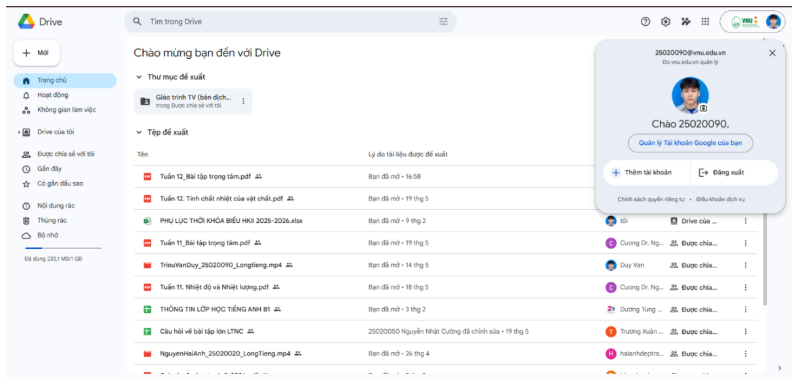
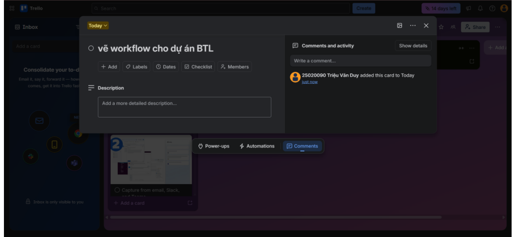
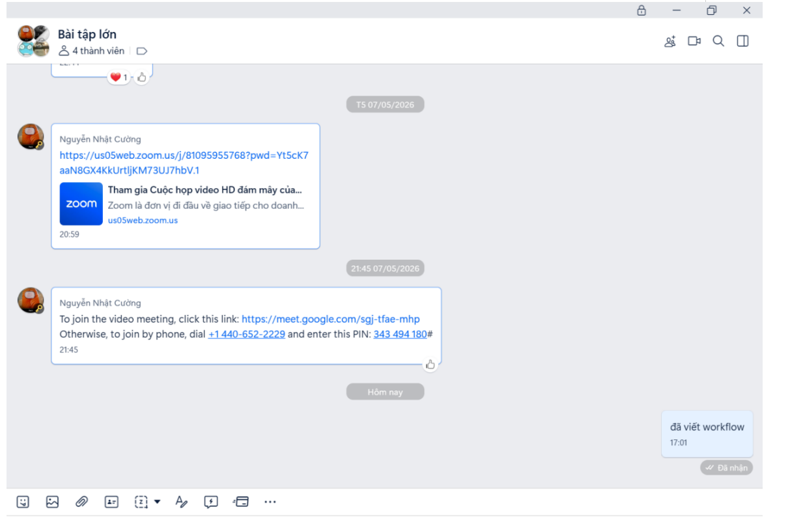
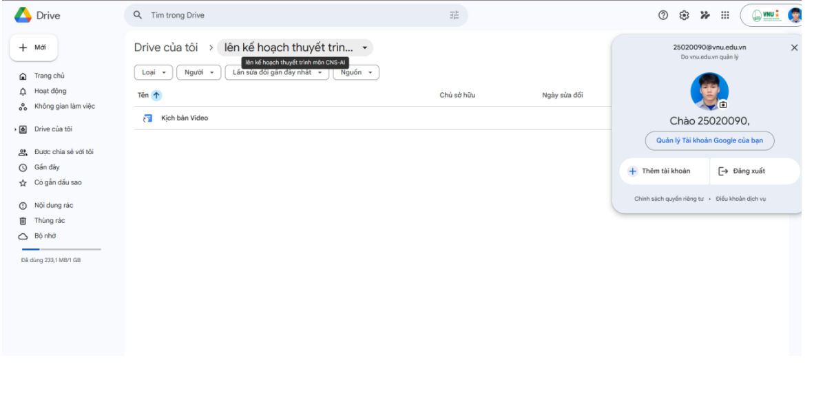
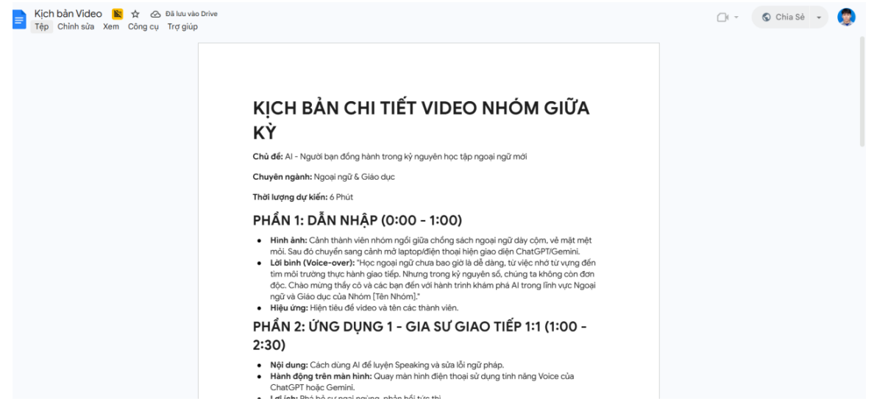

Bài 4: Hợp tác & Quản lý Dự án Số
Sinh viên: Triệu Văn Duy — Mã SV: 25020090
I. Lựa chọn và thiết lập công cụ (Tiêu chí 1)
Để đảm bảo tiến độ và chất lượng cho dự án nhóm, cá nhân em đã tham gia thiết lập và sử dụng đồng thời 4 công cụ thuộc các nhóm khác nhau, tạo thành một không gian làm việc tối ưu và có tính liên kết:
- 1. Quản lý dự án: Trello. Tất cả thẻ nhiệm vụ (Card) trên Trello đều được gắn link tài liệu tương ứng từ Google Drive để tối ưu hóa không gian làm việc.
- 2. Soạn thảo cộng tác: Google Docs. Dùng để cùng nhau viết kịch bản và báo cáo.
- 3. Lưu trữ tệp tin: Google Drive. Nơi tập trung toàn bộ tài nguyên của dự án.
- 4. Giao tiếp: Zalo/Slack. Kênh trao đổi thông tin nhanh hàng ngày.

II. Quá trình thực hiện nhiệm vụ cá nhân
1. Quản lý tác vụ cá nhân (Tiêu chí 2)
Trong số các công cụ quản lý công việc được giới thiệu, nhóm em đã quyết định lựa chọn trải nghiệm Trello. Sau một thời gian áp dụng thực tế vào dự án nhóm, em nhận thấy đây là một giải pháp cực kỳ trực quan, dễ tiếp cận và mang lại sự thay đổi rất tích cực cho hiệu suất của cả nhóm.
- Tổ chức công việc: Khi áp dụng mô hình Kanban của Trello (với các luồng cơ bản như To-do, Doing, Done), bức tranh tổng thể của dự án trở nên rõ ràng hơn bao giờ hết. Nhóm có thể dễ dàng nắm bắt đầu việc nào đang chạy, việc nào đã hoàn thành và việc nào đang tồn đọng.
- Thực thi nhiệm vụ: Nhóm em thiết lập từng Card (thẻ) cho các nhiệm vụ cụ thể, gắn tên người phụ trách, đặt deadline và đính kèm mô tả. Đặc biệt, em rất tâm đắc tính năng Checklist – công cụ tuyệt vời để "chẻ nhỏ" một nhiệm vụ lớn thành nhiều bước nhỏ, giúp quá trình làm việc bớt áp lực và khoa học hơn hẳn. Cá nhân em luôn chủ động cập nhật tiến độ trên thẻ của mình ít nhất 3 lần/tuần.

2. Tương tác và giao tiếp nhóm (Tiêu chí 2)
Sự chuyên nghiệp qua màn hình máy tính không nằm ở việc bạn dùng công cụ đắt tiền, mà nằm ở việc bạn xóa bỏ được bao nhiêu sự mơ hồ cho người ở đầu dây bên kia. Trong tuần qua, em duy trì hơn 10 lượt tương tác hỗ trợ nhóm bằng cách tối ưu hóa "tín hiệu phản hồi":
- Một lượt thả emoji hoặc dòng tin ngắn "Mình đã nhận" tuy đơn giản nhưng lại tạo ra sự an tâm và minh chứng cho luồng công việc xuyên suốt.
- Thay vì để đối tác chờ đợi trong vô vọng, em luôn hồi đáp kèm theo một cái hẹn cụ thể. Ví dụ: "Mình đã nắm thông tin và sẽ gửi phản hồi chi tiết cho bạn trước 14h chiều nay nhé!".

3. Quản lý tài nguyên, tệp tin và soạn thảo (Tiêu chí 3)
- Lưu trữ (Google Drive): Em phụ trách việc tạo lập hệ thống thư mục logic với 2 cấp: Thư mục gốc [Tên Dự Án] → Thư mục con [Tài liệu tham khảo], [Bản nháp Docs], [Sản phẩm Final]. 100% tệp tin do em tải lên đều được đặt tên theo quy chuẩn: [Ngày]_[Tên nội dung]_[Tên người làm].
- Soạn thảo (Google Docs): Em đã đóng góp trực tiếp nội dung vào bản báo cáo chung. Các tệp này đều được thiết lập quyền truy cập "View" cho giảng viên và "Edit" cho thành viên nhóm rất phù hợp.


III. Phân tích 3 Thách thức & 3 Giải pháp (Tiêu chí 4)
Trong quá trình hợp tác, bản thân em và nhóm đã gặp phải một số khó khăn, nhưng đều đã tìm ra cách khắc phục hiệu quả:
🔥 Thách thức 1: Quên cập nhật trạng thái tiến độ lên hệ thống
- Vấn đề: Thời gian đầu, một vài thành viên chưa quen thao tác nên thỉnh thoảng quên kéo thả thẻ hoặc cập nhật trạng thái, khiến bảng công việc đôi lúc chưa phản ánh đúng 100% thực tế.
- Giải pháp: Công cụ dù xịn đến đâu cũng cần đi kèm với kỷ luật và thói quen của người sử dụng. Em đã chủ động đóng vai trò nhắc nhở (nhắn tin vào group chung mỗi cuối ngày) để các bạn rà soát lại Trello, từ đó hình thành thói quen cho cả nhóm.
🔥 Thách thức 2: Tranh luận kéo dài, giải quyết vấn đề chậm qua tin nhắn
- Vấn đề: Có những nội dung phức tạp (như thống nhất ý tưởng kịch bản), nhóm chat qua lại rất lâu, trôi tin nhắn mà không chốt được vấn đề.
- Giải pháp: Nhận biết đúng thời điểm để "ngừng gõ phím, nhấc máy lên" chính là biểu hiện của một người giao tiếp thông minh. Nếu một chủ đề chat giằng co quá 5 phút mà vẫn chưa ngã ngũ, em đã chủ động đề xuất một cuộc gọi nhanh qua Google Meet hoặc Zalo Call để chốt ý án.
🔥 Thách thức 3: Lộn xộn trong việc ghép bài từ nhiều thành viên
- Vấn đề: Ban đầu mỗi người làm trên một file Word riêng rồi gửi vào nhóm, dẫn đến việc người tổng hợp bị quá tải và không kiểm soát được đâu là file cập nhật cuối cùng.
- Giải pháp: Chuyển toàn bộ công việc lên soạn thảo chung trên một file Google Docs duy nhất. Mọi người có thể thấy nhau đang gõ gì theo thời gian thực (Real-time), tận dụng tính năng "Thêm nhận xét" (Comment) để góp ý trực tiếp vào đoạn văn của người khác thay vì nhắn tin bên ngoài.
IV. Kết luận
Nhìn chung, nếu được khai thác đúng cách và duy trì tính kỷ luật cập nhật hàng ngày, các công cụ trực tuyến không chỉ giúp dự án về đích trơn tru mà còn rèn luyện kỹ năng quản lý thời gian cực kỳ hiệu quả cho mỗi cá nhân. Quá trình làm bài tập này đã giúp em chuyển đổi thành công từ cách làm việc "bản năng" sang có hệ thống và chuyên nghiệp hơn.